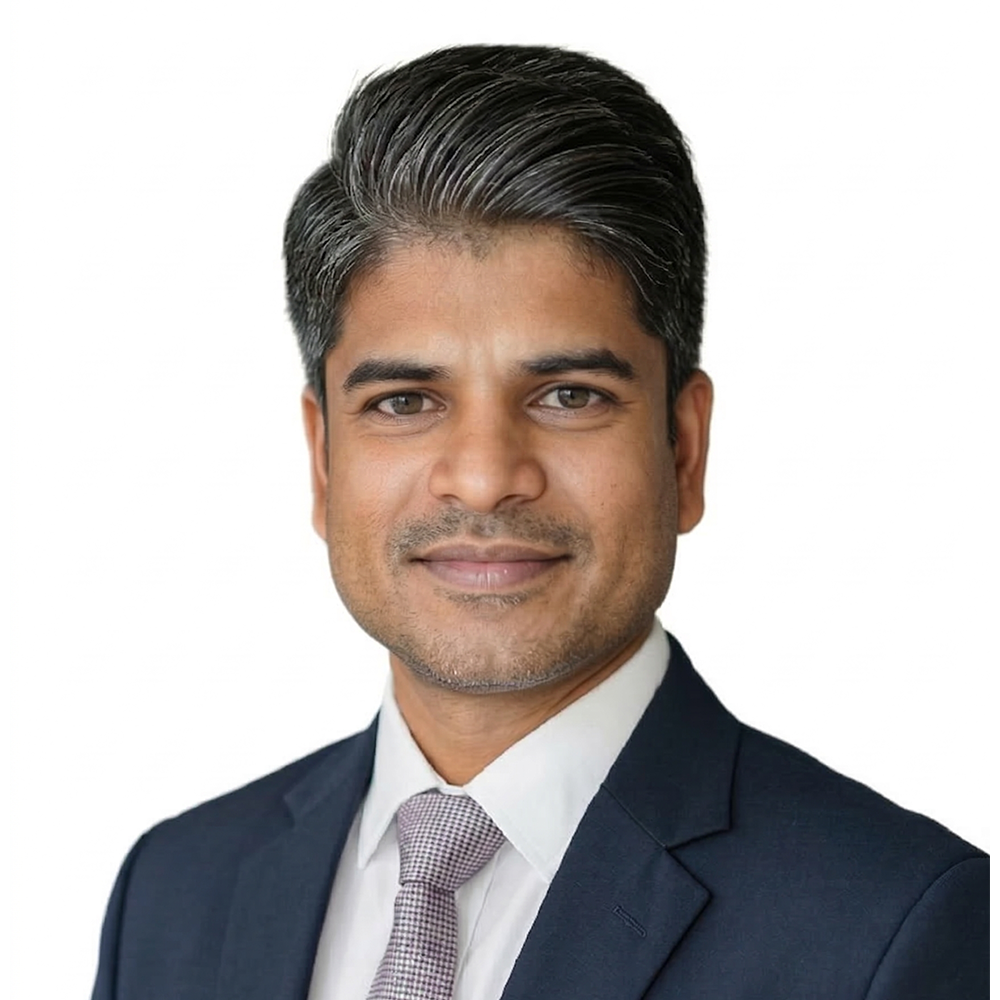

MS Ortho · DNB Ortho · MNAMS · PhD — Fellow in Spine Surgery, Endoscopic Spine, Regenerative Medicine & Orthopaedic Rheumatology
Orthopaedic and spine surgeon-scientist working at the intersection of clinical practice, large-scale evidence synthesis, regenerative medicine, and AI-assisted research. Research Head of the Orthopaedic Research Group.

Medical degrees, board certification, doctoral research, and sub-specialty fellowships.
Department of Orthopaedics — teaching, clinical service, and surgical training.
Directing the research programme of the Orthopaedic Research Group, which he co-founded.
Handling editor across four peer-reviewed journals, with 163 verified editor records.
Editorial board appointments across international orthopaedic and stem-cell journals.
Executive and committee positions across international orthopaedic bodies.
Co-founded the Orthopaedic Research Group, a collaborative research collective.
Visiting research appointments across four academic institutions in South India.
Curriculum leadership for stem-cell and regenerative-medicine education.
Across 50+ journals, including:
Podium papers and posters presented at regional, national, and international meetings.
The latest publications, updated from indexed records. These reflect active lines of ongoing research.
Featured work spanning spine surgery, regenerative medicine, evidence synthesis, methodology, and AI. Filter by theme — papers appear under every theme you touch. The complete indexed record lives on the full publications page.
Citation impact at a glance, in the familiar Google Scholar format. Totals reflect the complete indexed record; the chart shows citations accrued each year.
A circular connectivity map of research collaborations. Dr. Muthu sits at the hub; collaborators are arranged around the circle and grouped into their collaboration clusters — the Orthopaedic Research Group (ORG), AO Spine Knowledge Forum Degenerative, and the Global Burden of Disease study network. Ribbon and node size reflect the number of shared papers. Hover for detail; filter by group.
Core collaborators include the Orthopaedic Research Group team (Madhan & Naveen Jeyaraman, Girinivasan Chellamuthu, Arulkumar Nallakumarasamy), the AO Spine Knowledge Forum Degenerative (Stipe Corluka, Luca Ambrosio, Zorica Buser, Andreas Demetriades), and global GBD study collaborators.
A co-developed pipeline of AI agents that automates the labour-intensive stages of systematic reviews — turning weeks of manual screening into hours, with reproducible, auditable outputs.
Automatically detects and removes duplicate records across database exports (PubMed, Scopus, Web of Science, Embase) using fuzzy title, DOI, and author matching — eliminating the tedious first step of every systematic review.
Applies inclusion and exclusion criteria to titles and abstracts using large language models, ranking and filtering thousands of records at scale while flagging borderline cases for human review — a machine-learning-assisted screening platform.
Pulls structured data — study design, sample size, outcomes, effect estimates — from included full texts into analysis-ready tables, closing the loop from raw search to synthesis-ready dataset.
The Orthopaedic Research Group runs an open, high-output research programme. Two doors are open.
Established researchers, clinicians, and institutions looking to co-develop studies, systematic reviews, or multi-centre projects.
Students, residents, and early-career doctors wanting hands-on training in research methodology, writing, and evidence synthesis.
Open to research collaborations, peer review, editorial invitations, speaking, and mentorship.